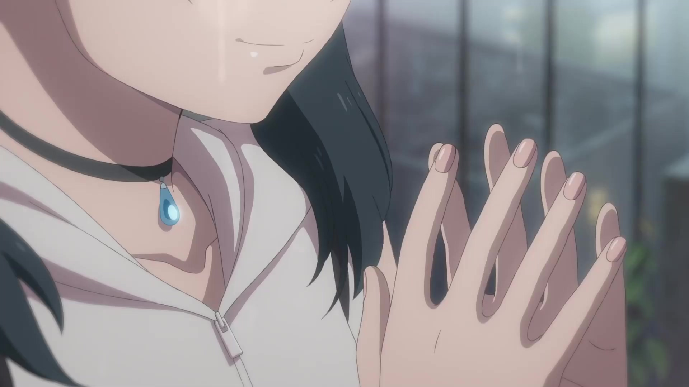

使用说明
第一步：在文件输入处上传文件
第二步：点击转化为帧，将视频每一帧转化为单帧图片
第三步：单击处理开始处理文件，将每一帧进行增强处理（该过程较慢，提供中途退出功能）
第四步：单击帧转化为视频将所有帧合成为视频（该过程较慢，提供中途退出功能）
当然也可以使用一键启动功能，软件会自动完成逻辑，该功能预计下个月开发
文件输入与检查配置
F:\ArSrNaSystems\video-enhance\src\backres\onepiece_demo.mp4
视频参数与预览
处理操作
第一步:转换为帧
该操作将会在原视频目录下生成文件夹 输入文件名_tmp 与 输入文件名_out
分别用于视频帧转换与视频帧处理
分别用于视频帧转换与视频帧处理
日志
第二步：视频帧增强
当前存在 0 帧需要处理
请仔细检查所有配置以及文件内容
按下后将会强行干掉子进程，请悉知
第三步：帧合成为视频
当前存在 0 帧需要处理
编码器
建议直接使用默认值，最好不要修改，如果需要显卡加速的，建议先去搜索自己显卡加速对应的 ffmpeg 编码器
必须先对帧进行增强处理才能开始，就在上一部分，不然你按下去100%闪退，不信就试试，请仔细检查所有配置以及文件内容
按下后将会强行干掉子进程，请悉知
日志在此处
输出


清理工具